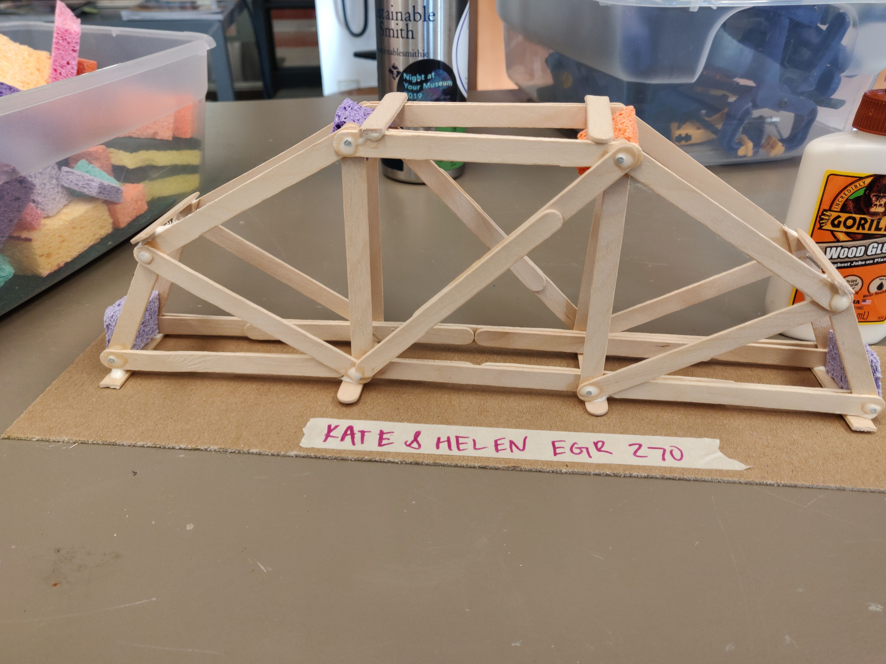
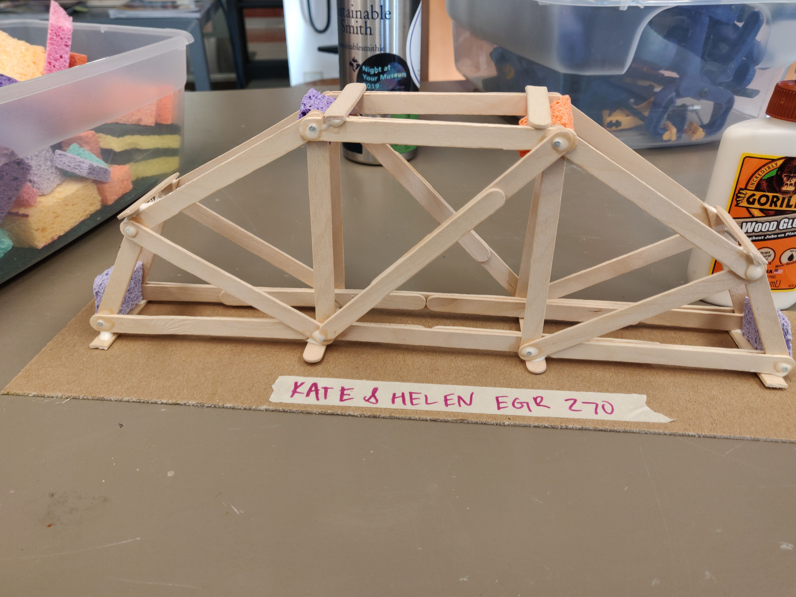
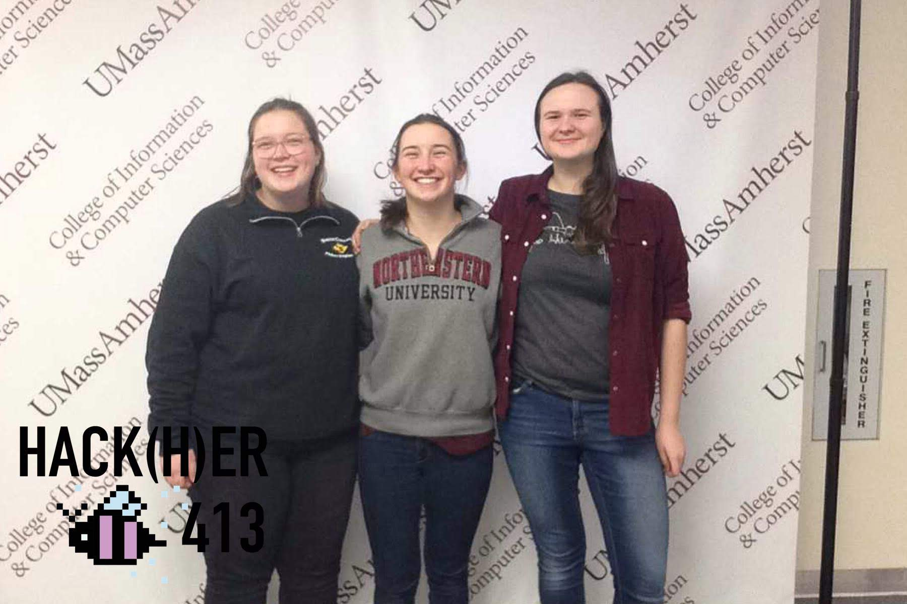
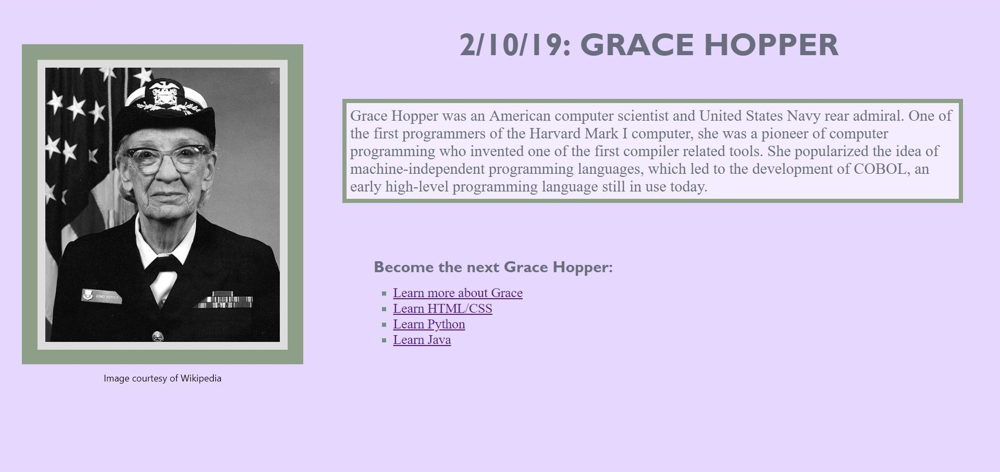

Class Project, Fall 2019
For Engineering 270: Mechanics as a class we were tasked in pairs to create a truss bridge that could hold 5g/N when crushed in the Instrom. While most of the bridges were unable to hold that weight, ours made it to 5.07N/g and was the lightest bridge to do so. It eventually failed by warping in and out of the plane, which was intersting because we had analyzed it as a 2D truss, and applying half of the force. With that analysis, the truss should have been able to withstand about 800N, but in reality, the connections between the two trusses were the weakest part.
 

Grubb Lab
Spring 2020-Present
Starting in the spring of 2020 I have been working in the Grubb Software Engineering Lab developing and implementing additional functionality for the BloomingLeaf, a a web-based tool for modeling and analyzing (Tropos like) formal goal models with evolving intentions.
x
UW CEBR
Summer 2019
I was a research assistant in the Mackensie Lab in the department of Material Science. This was through the Clean Energy Institute and was their Clean Energy Bridge to Research Program. My project was focused on developing a new solution processing technique for perovskite photovoltaics, as well as shadowing and assisting in various other work relating to perovskites.
Class Project, Fall 2018
As the culminating project of Engineering 100 Engineering for Everyone: Energy and the Environment the class made a Tiny Town of model houses, set out on the lawn in mid December that had to regulate their own internal temperature using a combination of thermal masses, and servo moters that were able to open doors or hatches. My team built our house inspired by old castle ruins and a Mondrian painting. Our house is still on display in the atrium of Ford Hall at Smith College.

Head of New Students for Parsons House
At Smith, students most commonly live in houses, dorms of 20-100 with strong communities. My first year, the house coommunity was an important part of my Smith experience, and I wanted to make my house, Parsons, as welcoming as possible for the incoming class! As a Head of New Students (HONS) I helped with move in, ran house events, and generally was a friendly face to the class of 2023.
In the Fall of 2020 I plan to continue my involvement in house community as the House President.
 x
x
Lawnmower Engine TA
Spring 2020 - Present
Students in Engineering 110: Fundamentals of Engineering all participate in the Lawnmower Engine Lab, where they take apart an old lawnmower engine, meet with a TA to discuss the mass and energy flows that power it, then reassemble the engine. My first year I absolutly loved this project. I enjoyed getting to do something hands on, as well as getting to apply theoretical knowledge to a real peice of machinery. As a TA I enjoy getting to share this project with the first years, while at the same time getting to connect with a new year of engineers! The best part of engineering at Smith is the community, and this possition helps me connect with friends I might not have met otherwise.
HackHer 2019 Demo
At HackHer 2019, together with Jessica Keast and Julia Heinz we demoed a prototype of Daily Role Models, a Chrome extention that customized the users search homepage to include the biography of someone from an underepresnted group in STEM along with links to relevant learning resources. Being only halfway through my intro CS class, with only a prior background of AP CS in Java, building even a simple page with HTML and CSS was a very new experience, let alone adding it to the Chrome Store as an extention. Never the less, working on Daily Role Models was an inspiring experience, as I saw how much I could learn and build in just a few short hours.
  x